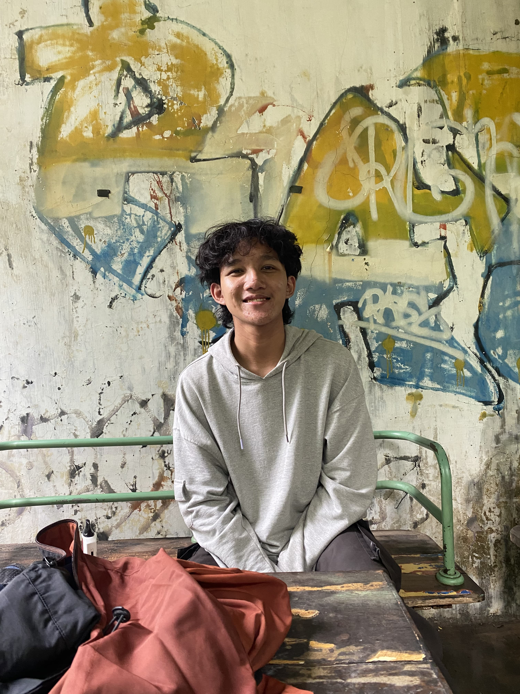

Profile
Yusriyah Fajar Dwiputra Santoso
Mechatronics Engineering
about
A little story about me
It all began when I enrolled at SMK Negeri 8 Malang, where I majored in Mechatronics Engineering, in this major I wasn’t particularly interested in at the time. However, everything changed when I participated in the Student Skills Competition (LKS) in the mechatronics category during my second year at the school. Alhamdulillah, I managed to win second place even though I didn’t take first place, I met many amazing people and gained valuable knowledge from the competition.
After that, I participated in many activities; I also learned a lot about Computer-Aided Design (CAD) using Autodesk Inventor, OMRON Programmable Logic Controllers (PLCs), and dabbled a bit in coding—though I wasn’t particularly skilled at it. Still, I have no regrets about attending this school. After graduating, alhamdulillah, I was accepted into the Electronics Engineering Polytechnic Institute of Surabaya (EEPIS) , majoring in the same field Mechatronics Engineering. Here, I met many amazing people, both from the same competition field and from various regions outside East Java.
Connected